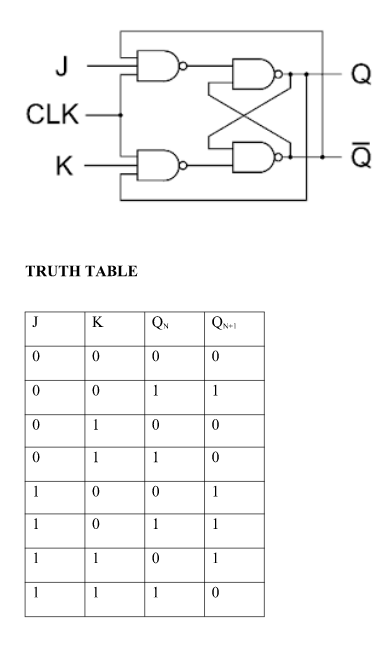
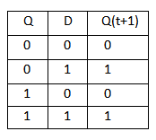

Multivibrators
1. Definition
A multivibrator is a two-state electronic circuit that acts as an oscillator, timer, or memory element. It uses cross-coupled transistors or logic gates to generate non-sinusoidal waveforms like square waves.
2. Classification (The 3 Types)
-
Astable Multivibrator (Free-Running)
- Stable States: Zero stable states (two temporary states).
- Operation: Automatically switches between states without an external trigger.
- Output: Continuous square wave (acts as a clock oscillator).
- Application: LED flashers, pulse generators.
-
Monostable Multivibrator (One-Shot)
- Stable States: Exactly one stable state.
- Operation: An external trigger forces it into a temporary state. It stays there for a fixed time (set by an RC circuit) and automatically resets.
- Output: Single pulse of a fixed duration.
- Application: Timers, switch debouncing.
-
Bistable Multivibrator (Flip-Flop)
- Stable States: Two fully stable states.
- Operation: Remains in its current state indefinitely until an external trigger forces it to switch. It never resets automatically.
- Output: Constant high or low DC voltage.
- Application: 1-bit memory storage (RAM), computer registers.
3. Summary Table
| Feature |
Astable |
Monostable |
Bistable |
| Stable States |
0 |
1 |
2 |
| Trigger Needed? |
No (Self-starting) |
Yes (To start pulse) |
Yes (To change state) |
| Output Waveform |
Continuous Square Wave |
Single Pulse |
Steady DC Level |
| Core Function |
Oscillator |
Timer |
Memory Storage |
Sequential Logic: Flip-Flops and Registers
-
A flip-flop is a sequential circuit which consists of a single binary state of information or data.
-
The digital circuit is a flip-flop which has two outputs and are of opposite states. It is also known as a Bistable Multivibrator.
The 4 Types of Flip-Flops
1. RS(SR) Flip-Flop (Set-Reset)
The foundation of all flip-flops. It uses two inputs to control a single bit of data.
Inputs: S (Set to 1), R (Reset to 0)
How it works:
S = 1, R = 0 → Output becomes 1.S = 0, R = 1 → Output becomes 0.S = 0, R = 0 → Hold (remembers the last state).S = 1, R = 1 → Invalid/Forbidden. (Both outputs try to go low at once, crashing the system).

2. JK Flip-Flop (The Fixer)
An upgraded SR flip-flop. It eliminates the forbidden state by routing outputs back into the inputs.
Inputs: J (acts like Set), K (acts like Reset)
How it works:
J = 1, K = 0 → Output becomes 1.J = 0, K = 1 → Output becomes 0.J = 0, K = 0 → Hold (no change).J = 1, K = 1 → Toggle. (Inverts the output: 0 becomes 1, and 1 becomes 0).
The Flaw: If the clock pulse stays high too long, the output will toggle uncontrollably (Race-Around Condition).

3. D Flip-Flop (Data / Delay)
The most common flip-flop used today. It adds an inverter between S and R so the inputs can never match.
Input: D (Data)
How it works:
Whatever value is at D gets copied to the output on the next clock tick.
D = 1 → Output becomes 1.D = 0 → Output becomes 0.
Use case: Central component for computer memory (RAM) and CPU registers.


4. T Flip-Flop (Toggle)
Created by connecting the J and K inputs of a JK flip-flop together.
Input: T (Toggle)
How it works:
T = 0 → Hold (no change).T = 1 → Toggle (flips the output from 0 to 1, or 1 to 0).
Use case: Digital clocks, counters, and frequency dividers (it cuts clock speed exactly in half).


Applications of Flip-Flops
-
1-Bit Memory: Act as the fundamental cell to store a single binary bit (0 or 1).
-
Data Registers: Cascaded together to form registers that hold multi-bit binary data inside CPUs.
-
Shift Registers: Shift data serially or in parallel for communication and data conversion.
-
Binary Counters: Count clock pulses to track events, loops, or timing sequences in digital systems.
-
Frequency Division: Toggle mode configuration cuts the input clock frequency perfectly in half (f/2).
-
Switch Debouncing: Eliminate mechanical switch vibration noise to provide a clean, single digital pulse.
-
SRAM Storage: Used as the primary memory element inside fast Static Random Access Memory.
-
Digital Delay Lines: Provide a precise time-delay for data signals matching the clock period.
-
State Control: Store the current state of operation in Finite State Machines (FSMs).
-
Waveform Synchronization: Align asynchronous external inputs with the main internal system clock.
Counters:
A Counter is a sequential logic circuit designed to count clock pulses. It is constructed by cascading multiple flip-flops together. The binary output states of these flip-flops change in a specific, repeating sequence.
Core Difference: Asynchronous vs. Synchronous Counters
The primary difference lies in how the clock signal is distributed to the flip-flops.
- Asynchronous (Ripple) Counters: The external clock signal is applied only to the first flip-flop. Each subsequent flip-flop is clocked by the output of the preceding flip-flop. Because the signal ripples through the chain, it creates propagation delays.
- Synchronous Counters: The external clock signal is applied to all flip-flops simultaneously. All flip-flops change states at the exact same moment, eliminating ripple delays and allowing for much higher operational speeds.
Key Operational Types of Counters
1. Ripple Counter
- Type: Asynchronous.
- How it works: Flip-flops are connected in a chain where the output (
Q or Q̄) of one stage triggers the clock input of the next stage.
- Limitation: It suffers from accumulation delays, which can lead to glitched, temporary false states at high clock frequencies.
2. Mod (Modulus) Counter
- Definition: "Modulus" represents the total number of unique states a counter passes through before resetting back to its initial state.
- How it works: An
n-bit counter naturally counts up to 2n states (e.g., a 3-bit counter is naturally a Mod-8 counter, counting 0 to 7). To create a custom Mod counter (like a Mod-6 counter, counting 0 to 5), an external logic gate (like a NAND gate) is added to detect the target state and force an instant RESET to all flip-flops.
3. Up / Down Counter
An Up/Down counter is a two-way counter that can count forward or backward.
- Up Counting: Counts upward (
0, 1, 2, 3...) by wiring the normal outputs (Q) to trigger the next steps.
- Down Counting: Counts backward (
3, 2, 1, 0...) by wiring the upside-down, inverted outputs (Q̄) to trigger the next steps.
- The Switch: It has a directional control wire. Sending a high voltage (
1) makes it count up, and a low voltage (0) instantly forces it to count down.
4. Ring Counter
A ring counter is a loop of flip-flops that passes a single starting bit around in a circle.
- How it works: The output of the last flip-flop connects directly back to the input of the first one.
- The Pattern: You start by loading a single
1 into the first slot. Every time the clock ticks, that 1 takes one step to the right, looping back to the start when it reaches the end.
- Example Sequence: 1000 → 0100 → 0010 → 0001 → loops back to 1000.
Johnson Counter (Twisted Ring / Switch-Tail Counter)
-
Configuration: The inverted output (Q̄) of the last flip-flop connects back to the input (D) of the first flip-flop.
-
Operation: Opposing bit values are fed back into the loop, creating a sequence where blocks of 1s followed by blocks of 0s shift through the stages.
-
States: An n-stage Johnson counter doubles its efficiency, providing 2n unique states.
-
Advantage: Does not require initial pre-loading of a bit pattern; it can naturally start from all zeros.
Binary Ripple Counter
1. Definition
A binary ripple counter (asynchronous counter) is a digital circuit where only the first flip-flop is clocked by an external signal. Each subsequent flip-flop is triggered by the output of the preceding one, causing the clock to "ripple" through the stage array.
2. Core Characteristics
- Asynchronous: Flip-flops do not share a common clock.
- Toggle Configuration: Built using JK or T flip-flops fixed in toggle mode (J=K=1 or T=1).
- Modulus (2n): An n-flip-flop counter cycles through 2n unique states (from 0 to 2n - 1).
3. 3-Bit Counting Sequence
- State 0 (Initial): Q₂=0, Q₁=0, Q₀=0 (Decimal 0)
- State 1: Q₂=0, Q₁=0, Q₀=1 (Decimal 1)
- State 2: Q₂=0, Q₁=1, Q₀=0 (Decimal 2)
- State 3: Q₂=0, Q₁=1, Q₀=1 (Decimal 3)
- State 4: Q₂=1, Q₁=0, Q₀=0 (Decimal 4)
- State 5: Q₂=1, Q₁=0, Q₀=1 (Decimal 5)
- State 6: Q₂=1, Q₁=1, Q₀=0 (Decimal 6)
- State 7: Q₂=1, Q₁=1, Q₀=1 (Decimal 7)
- Reset: Automatically resets back to 000 on the 8th clock pulse.
4. Pros & Cons
- Advantage: Simple hardware design with minimal logic gates.
- Disadvantage: Slow speed due to accumulated propagation delay across the cascading stages.
Shift Registers:
A Register is a group of flip-flops working together to store multiple bits of digital data. A Shift Register is a specialized register that moves (shifts) those stored bits laterally from one flip-flop to the next on every clock pulse.
Core Purpose of Shift Registers
- Data Storage: Temporarily holds binary words inside CPUs and controllers.
- Data Conversion: Translates data formatting between Serial (one wire, bit-by-bit) and Parallel (multiple wires, all at once).
- Time Delay: Delays a digital signal pipeline by a specific number of clock cycles.
The 4 Primary Types of Shift Registers
1. SISO (Serial-In, Serial-Out)
- Data Entry: One bit at a time, sequentially through a single input wire.
- Data Exit: One bit at a time, sequentially through a single output wire.
- How it works: It acts like a pipeline. A 4-bit SISO register requires 4 clock pulses to load data entirely, and 4 more pulses to shift it out completely.
- Primary Use: Digital time-delay lines and basic data buffers.
2. SIPO (Serial-In, Parallel-Out)
- Data Entry: One bit at a time, sequentially through a single input wire.
- Data Exit: All stored bits are read simultaneously from separate parallel output pins.
- How it works: Data creeps in bit-by-bit until the register is full. Once filled, the circuit reads all positions at the exact same moment.
- Primary Use: Converting single-line serial communications (like USB or SPI protocols) into parallel system data for processor buses.
3. PISO (Parallel-In, Serial-Out)
- Data Entry: All bits are loaded into the register simultaneously using multiple pins.
- Data Exit: Data is shifted out sequentially, one bit per clock cycle, through a single wire.
- How it works: A control pin switches the register into
Load mode to grab a full data byte instantly, then switches to Shift mode to stream it down a single line.
- Primary Use: Converting internal computer parallel data into serial streams for long-distance transmission over minimal wiring.
4. PIPO (Parallel-In, Parallel-Out)
- Data Entry: All bits are loaded simultaneously through parallel input wires.
- Data Exit: All bits are read simultaneously from parallel output wires.
- How it works: It does not actively shift data between internal flip-flops during normal operation. It instantly captures an entire multi-bit word on a clock edge and holds it steady.
- Primary Use: Temporary storage registers inside CPU arithmetic logic units (ALUs).